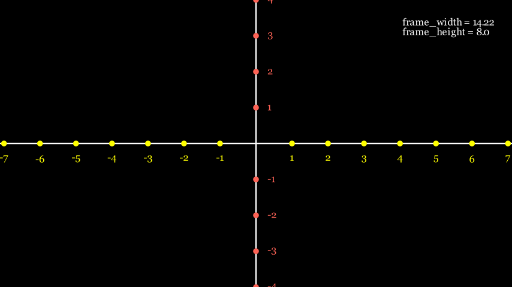

manim
文档 https://manim.markhoo.com/reference_index/mobjects/matrix-1/integermatrix https://dianyao.co/manim/1.%E5%9F%BA%E6%9C%AC%E4%BD%BF%E7%94%A8/%E5%9B%BE%E7%89%87.html
运行
p 表示程序运行后会进行预览（图片或视频）； ql 表示低质量（quality low）, 其他的选项有 -ql, -qm, -qh, -qk, 分别表示 低质量、正常质量、高质量、4K质量； manim -pql test.py Demo6
布局
config['disable_caching'] = True 视频生成缓存
常量 SMALL_BUFF: float = 0.1 MED_SMALL_BUFF: float = 0.25 MED_LARGE_BUFF: float = 0.5 LARGE_BUFF: float = 1
get_right() 等方法返回的三维向量 [1, 0, 0] 表示 Mobject 右侧边缘的坐标。 第一个元素（1）表示 Mobject 在 x 轴上的坐标。 第二个元素（0）表示 Mobject 在 y 轴上的坐标。 第三个元素（0）表示 Mobject 在 z 轴上的坐标。 RIGHT=[1,0,0] LEFT=[-1,0,0.] UP=[0,1,0.] DOWN=[0,-1,0.] ORIGIN=[0,0,0] UL=[-1,1,0]上左 DL=[-1,-1,0]下左 UR=[1,1,0]上右 DR=[1,-1,0]下右
宽高 self.camera.frame_width 画布宽 self.camera.frame_height 画布高 字体大小用像素 其他对象用画布单位
move_to 功能：将 Mobject 移动到指定的位置。 用法：mobject.move_to(position) 示例：circle.move_to(ORIGIN) 将圆移动到原点。
align_to 功能：将 Mobject 中心对齐到另一个 Mobject 中心。 用法：mobject.align_to(other_mobject, direction) 示例：circle.align_to(square, UP) 将圆的上边缘与正方形的上边缘对齐。
shift 功能：将 Mobject 相对于其当前位置进行平移。 用法：mobject.shift(vector) 示例：circle.shift(RIGHT * 2) 将圆向右平移两个单位。
next_to 功能：将 Mobject 放置在另一个 Mobject 的旁边，并可以指定相对位置和间距。 用法：mobject.next_to(other_mobject, direction, buff=0) 示例：circle.next_to(square, RIGHT, buff=0.5) 将圆放置在正方形的右边，间距为 0.5 个单位。
VGroup 功能：用于将多个manim对象组合成一个单一的垂直组。这个组可以作为一个整体进行操作，例如移动、缩放、旋转等。 用法：group=VGroup(circle, square, text) 详解：group.arrange(direction=RIGHT, buff=0.5) direction (str or np.ndarray): 指定排列的方向。可以是RIGHT、LEFT、UP、DOWN等字符串，也可以是一个np.ndarray类型的向量。默认值是DOWN，即从上到下排列。 aligned_edge (str or np.ndarray): 指定对齐的边缘。可以是LEFT、RIGHT、TOP、BOTTOM等字符串，也可以是一个np.ndarray类型的向量。默认值是None，表示不对齐。 buff (float): 指定对象之间的间隔。默认值是0.1。
坐标轴图 
pixel_width = config["pixel_width"] # 1920 is default
pixel_height = config["pixel_height"] # 1080 is default
aspect_ratio = config['aspect_ratio'] # 1920/1080 = 1.7777777777777777
frame_width = config["frame_width"] # 8.0 * 1.777 = 14.222
frame_height = config["frame_height"] # 8.0
media_width = config['media_width'] # 60%
# 创建一个文本对象，并设置轮廓宽度和颜色
legend = Text('frame_width = {}\nframe_height = {}'.format(round(frame_width, 2), frame_height), font_size=20)
self.add(legend.to_corner(UR))
# coordinate system
line1 = Line(frame_width * LEFT, frame_width * RIGHT)
line2 = Line(frame_height * UP, frame_height * DOWN)
self.add(line1, line2)
for i in range(-10, 10):
if i == 0:
continue
# x axis
dot = Dot([i, 0, 0]), color=YELLOW)
text = Text('{}'.format(i), font_size=20, color=YELLOW).next_to(dot, DOWN)
self.add(dot, text)
# y axis
dot = Dot([0, i, 0]), color=RED)
text = Text('{}'.format(i), font_size=20, color=RED).next_to(dot)
self.add(dot, text)
基本图形
通过stroke_width=xx 设置线宽,stroke_color 字体边框颜色 color=BLUE, # 边框的颜色,fill_color=GREEN填充颜色,fill_opacity=0.5 # 填充颜色的透明度(默认是0)
点 (Dot) 用法：Dot() 示例：dot = Dot(point=ORIGIN, radius=0.08, color=BLUE)
线 (Line) 用法：Line(start, end) 示例：line = Line(start=LEFT, end=RIGHT, color=RED)
圆 (Circle) 用法：Circle(radius, color) 示例：circle = Circle(radius=1, color=GREEN)
矩形 (Rectangle) 用法：Rectangle(width, height, color) 示例：rectangle = Rectangle(width=2, height=1, color=BLUE)
正方形 (Square) 用法：Square(side_length, color) 示例：square = Square(side_length=2, color=YELLOW)
椭圆 (Ellipse) 用法：Ellipse(width, height, color) 示例：ellipse = Ellipse(width=2, height=1, color=PURPLE)
多边形 (Polygon) 用法：Polygon(*points, color) 示例：polygon = Polygon(ORIGIN, RIGHT, UP, color=ORANGE)
箭头 (Arrow) 用法：Arrow(start, end, color) 示例：arrow = Arrow(start=LEFT, end=RIGHT, color=RED)
文本 (Text) 用法：Text(text, font_size, color) text: 要显示的文本内容。 font: 字体的名称，通常需要指定为粗体或斜体等特定样式，如'Arial Bold'。 font_size: 字体的大小，以像素为单位。 width:行宽，超过不会自动换行(需要换行需手动设置font_size，自动换行显示有问题)。 height: 总高。 line_spacing：行间距。 color: 文本的颜色，可以是颜色名称、RGB元组或颜色对象。 buff: 文本与其周围对象之间的缓冲距离。 slant: 文本的倾斜度，正值表示向右倾斜，负值表示向左倾斜。 weight: 字体的粗细，可以是'NORMAL'或'BOLD'。 family: 字体家族，如'serif', 'sans-serif'等。 style: 字体样式，如'normal', 'italic'等。 示例：text = Text("Hello, Manim!", font_size=36, color=WHITE)
数学公式 (MathTex) 用法：MathTex(formula, color) 示例：formula = MathTex(r"e^{i\pi} + 1 = 0", color=BLUE)
包围框 (SurroundingRectangle) 用法：SurroundingRectangle(group, color=RED, buff=0.5) 作用： 将对象用边框包住
图片 （ImageMobject） 用法：image= ImageMobject("images/test.png") 详情： height = image.height width = image.width
显示
Create 是一个动画操作，用于在场景中创建并显示一个或多个对象。当你使用Create时，manim会自动为这些对象生成一个动画，使得它们从不可见状态逐渐变为可见状态。 Write 是另一个动画操作，专门用于文本对象。当你使用Write时，manim会模拟文本逐个字符地被写入屏幕的效果。 GrowFromCenter 是manim库中的一个动画操作，用于创建一个动画效果，使得对象从中心点开始向外扩展或增长。这个操作通常用于图形或文本对象，以模拟它们从中心向外逐渐展开或放大的视觉效果。 Rotating(square, axis=OUT, about_point=ORIGIN, run_time=2)会生成一个动画，使得正方形围绕垂直于屏幕的轴（OUT）和原点（ORIGIN）旋转，动画持续时间为2秒。 MoveAlongPath 用于创建一个对象沿着指定路径移动的动画。这个路径可以是任何manim支持的形状，如圆、椭圆、多边形等。 Transform 用于创建一个对象到另一个对象的平滑变换动画。这种变换可以是形状、颜色、大小等方面的变化。
save_image Circle(radius=1, color=BLUE).save_image('test')
play play只能传入动画对象 self.play(square.animate.shift(LEFT)) run_time = 3：动画持续实践为 3 秒 self.wait(0.5)：停顿 0.5 秒 self.play(GrowFromCenter(square),rate_func = smooth,run_time=3)
svg iggy = SVGMobject("./images/iggy.svg").shift(RIGHT*3).scale(3) self.play(Write(cardi), rate_func = smooth, run_time = 3) self.wait(0.5)
circle = Circle(radius=1, color=BLUE)
self.add(circle)
# 播放一个动画
self.play(circle.animate.scale(0.5))
# 等待一段时间
self.wait(1)
# 继续播放另一个动画
# run_time 动画持续时间
self.play(circle.animate.shift(RIGHT * 2),run_time=1.5)
# 最后等待一段时间结束场景
self.wait(2)
text = Text("Hello, Manim!")
# 使用Write动画显示文本
self.play(Write(text))
self.wait(2)
circle = Circle(radius=1, color=BLUE)
dot = Dot()
dot2 = dot.copy().shift(RIGHT)
self.add(dot)
line = Line([3, 0, 0], [5, 0, 0])
self.add(line)
self.play(GrowFromCenter(circle))
self.play(Transform(dot, dot2))
self.play(MoveAlongPath(dot, circle), run_time=2, rate_func=linear)
self.play(Rotating(dot, about_point=[2, 0, 0]), run_time=1.5)
self.wait(2)
Text
t2 = Text('Google',font_size=120)
colors = [BLUE, ORANGE, PURPLE, PINK, TEAL,DARK_BROWN, RED,LIGHT_BROWN,GOLD,PURPLE_E]*10
# for i in range(len(t2)):
# t2[i].set_color(colors[i])
for letter in t2:
letter.set_color(np.random.choice(colors,size=1))
# 创建一个文本对象，并设置轮廓宽度和颜色等
text = Text("Hello, Manim!", t2s={'Hello':ITALIC}, t2w={'Hello':BOLD},t2c={'Hello':YELLOW})
text2 = Text('Hello world', gradient=(BLUE, GREEN)).scale(3).next_to(text, DOWN)
self.play(Write(text))
self.play(Write(text2))
self.wait()
self.wait(5)
# 创建一个带段落的文本
paragraph_text = Text(
"这是一个段落示例。\n"
"Manim 是一个用于创建数学动画的强大工具。\n"
"通过调整 line_spacing 属性，可以控制段落中的行间距。",
font_size=24,
line_spacing=1.5 # 调整行间距
)
# 将文本添加到场景中
self.play(Write(paragraph_text))
self.wait(2)
声音
# 添加声音（gain (float): 声音的增益/音量）
self.add_sound(sound_file, time_offset=0, gain=None, **kwargs)
# 查看声音长度
from mutagen.wave import WAVE
from mutagen.mp3 import MP3
audio = WAVE('test.wav')
duration = audio.info.length
保存为gif
from manim import *
config.save_as_gif = True # OR
config['save_as_gif'] = True
默认色
WHITE BLACK RED GREEN BLUE YELLOW PURPLE ORANGE GRAY BLUE_E BLUE_D BLUE_C BLUE_B BLUE_A TEAL_E TEAL_D TEAL_C TEAL_B TEAL_A GREEN_E GREEN_D GREEN_C GREEN_B GREEN_A YELLOW_E YELLOW_D YELLOW_C YELLOW_B YELLOW_A GOLD_E GOLD_D GOLD_C GOLD_B GOLD_A RED_E RED_D RED_C RED_B RED_A MAROON_E MAROON_D MAROON_C MAROON_B MAROON_A PURPLE_E PURPLE_D PURPLE_C PURPLE_B PURPLE_A PINK LIGHT_PINK ORANGE LIGHT_BROWN DARK_BROWN GRAY_BROWN